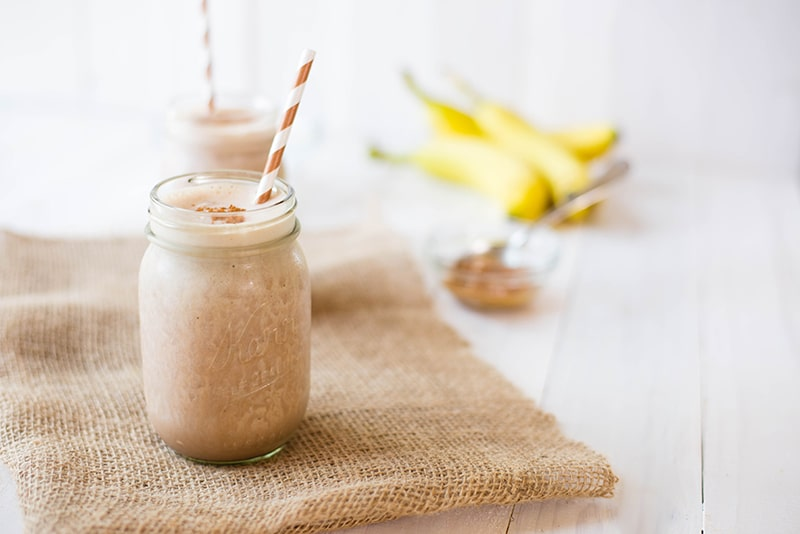

Lasagna

This creamy high-protein shake will keep you satisfied for hours and tastes like a chocolate-peanut butter banana milkshake. You don't even need to add protein powder, thanks to the naturally occurring protein in the soymilk, Greek yogurt and peanut butter.
Ingredients
- 6 ice cubes
- 1 cup milk
- 1 banana
- 1 scoop chocolate-flavored protein powder
- 2 tablespoons peanut butter
- 1 tablespoon honey
- 1 teaspoon unsweetened cocoa powder, or more to taste
Steps
- Blend ice cubes, milk, banana, protein powder, peanut butter, honey, and cocoa powder together in a blender until smooth.